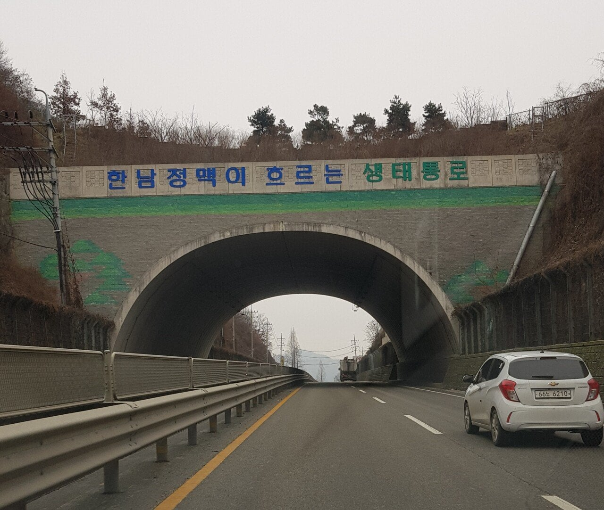

55 · 11 · 13 시간 전 · 원문

정직한 제목 과 내용으로 모십니다
수집 당시 댓글 11개
졸렬 · 17 시간 전
ㄴㅈ
씨벌지식정보방 · 17 시간 전
(논산훈련소 가는 다리 짤)
튀김만두 · 17 시간 전
레위나 · 17 시간 전
유사시 폭격으로 무너트릴수있는 다리입니다
성상품화개좋음 · 14 시간 전
저기 위에 사슴이랑 존나 다니던데
익사한넙치 · 14 시간 전
한녀 정맥은 왜 없어? 이거 여혐 아니야? 퓨ㅠ
↳ 답글 · 케틀햇 · 14 시간 전
쓰니야 이것도 한남이 가져갔나봐ㅠㅠ
아이뽕 · 14 시간 전
한남 정액 생리통 오
행운의편지 · 14 시간 전
한남정맥있어 널 너무 사랑한
SATISFY · 14 시간 전
푸르고청정한세계를위하여 · 14 시간 전
"백마터널"

ㄴㅈ